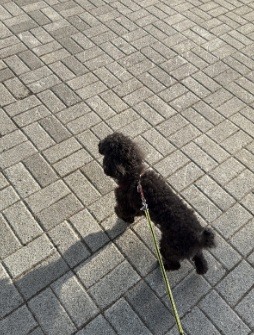

껌딱지 모먼트

"나의 최애 장소는 네 옆자리"
혼자 있는 건 절대 싫어! 안방마님 꼬미의 지정석은 언제나 사람 바로 옆입니다. 조용히 다가와 체온을 나누며 누워있는 게 가장 행복한 애교쟁이 껌딱지랍니다.
V.I.P 산책 스타일

"산책은 안겨서 하는 게 제맛"
내향형 강아지라 내 발로 오래 걷는 건 피곤해요. 하지만 집사 품에 쏙 안겨서 킁킁거리며 바깥 구경을 하는 건 최고로 좋아하죠. 동네에서 제일 편하게 산책하는 V.I.P(Very Important Poodle) 산책러입니다.
간식 타임 매직
평소엔 얌전하지만, 간식만 등장하면 빙글빙글 턴과 완벽한 복종을 보여주는 똑똑한 아인슈타인으로 변신합니다!